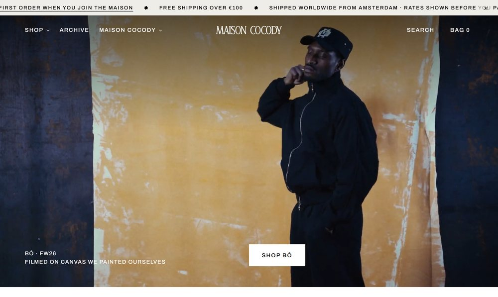

Direction E · after your notesStudio
The NOLOGO arrangement with Cocody’s own marks in it. The film leads; the pieces sit four across on the seamless; the Lab, the archive and the maison each get one band; the footer carries everything else.
- Answers
- Your six notes, one to one — the system page walks through each, and what is still to decide
- Best at
- Feeling like a shop that is open, and being buildable on WooCommerce as it stands
- Watch out
- The film carries the first screen. It needs a new one each cycle, or the page goes stale with it.
Instrument Serif for everything that speaks · Archivo for everything that works